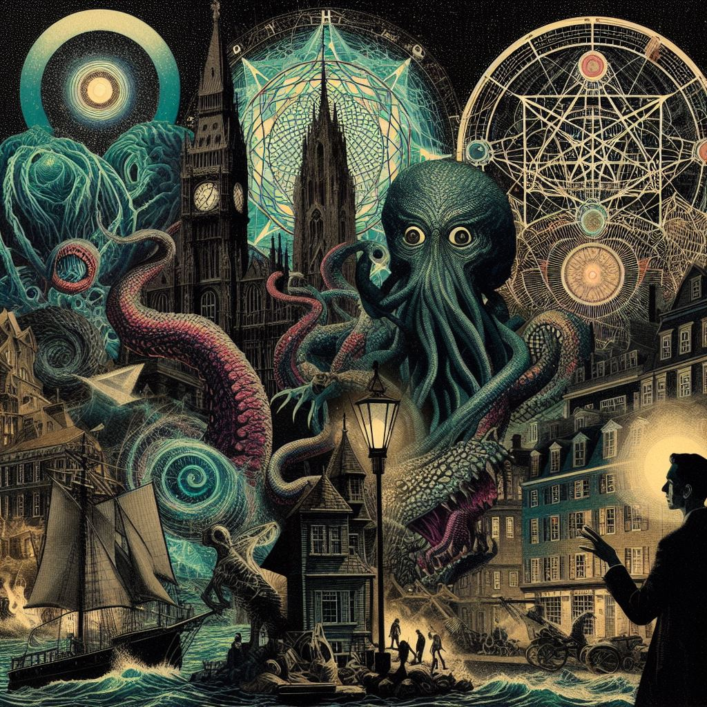
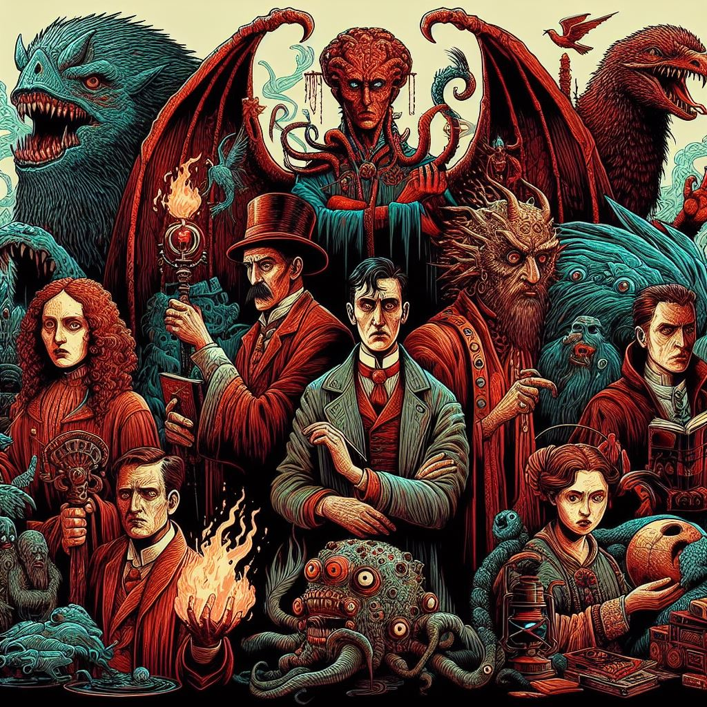
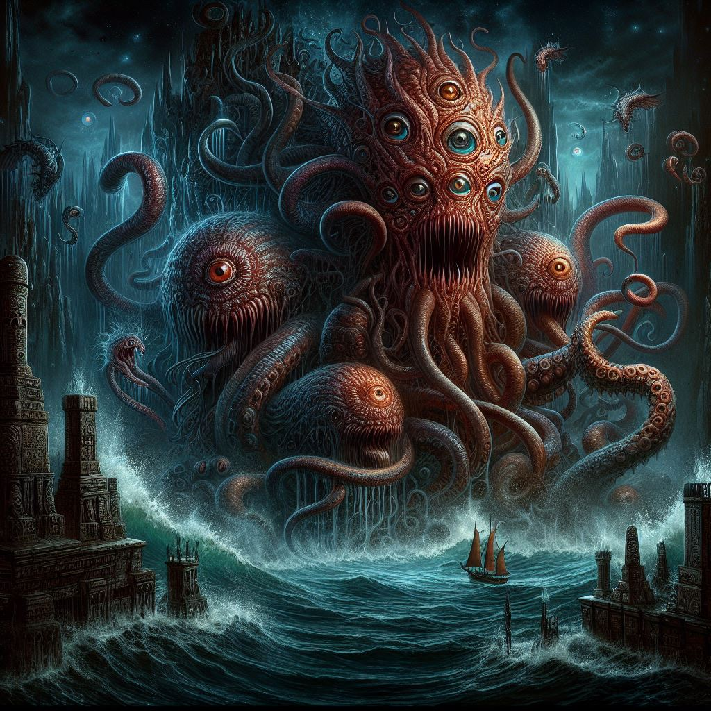

Obras de H.P Lovecraft

The Call of Cthulhu (O Chamado de Cthulhu)
Neste conto icônico, um investigador descobre um conjunto de documentos deixados por seu falecido tio. Esses documentos revelam a existência de uma entidade cósmica chamada Cthulhu, adormecida nas profundezas do oceano. À medida que a narrativa avança, o leitor é levado a uma jornada por todo o mundo, revelando cultos secretos, antigas relíquias e a ameaça iminente do despertar de Cthulhu. O conto é uma exploração fascinante do horror cósmico e da insignificância da humanidade diante das forças primordiais do universo.
The Shadow over Innsmouth (A Sombra sobre Innsmouth)
Este conto segue um jovem estudante que visita a cidade costeira de Innsmouth, onde descobre uma comunidade isolada e estranhamente decadente. À medida que ele explora mais a cidade e sua história sombria, ele se depara com segredos perturbadores sobre a população local e suas conexões com criaturas marinhas sobrenaturais conhecidas como "profundos". A história mergulha fundo nos temas de decadência genética, pactos sombrios e a percepção da verdade que pode levar à insanidade.
At the Mountains of Madness (Nas Montanhas da Loucura)
Esta narrativa segue uma expedição científica à Antártica, liderada pelo geólogo William Dyer. Enquanto exploram as vastas e geladas paisagens, eles encontram ruínas antigas e descobrem evidências de uma civilização alienígena pré-histórica. À medida que a equipe se aprofunda nas montanhas, eles encontram criaturas grotescas e antigos segredos que desafiam sua compreensão da realidade. O conto é uma jornada de descoberta científica que se transforma em um pesadelo de terror cósmico, explorando temas de curiosidade humana, conhecimento proibido e a fragilidade da sanidade diante do desconhecido.
Ir para o topo
Personagens de H.P Lovecraft

1. Cthulhu
Cthulhu é uma das mais famosas criações de H.P Lovecraft. Trata-se de uma entidade cósmica antiga, descrita como tendo uma aparência semelhante a um polvo ou lula gigante, com asas membranosas e um rosto coberto de tentáculos. Ele reside em um sono profundo no fundo do oceano, em uma cidade submersa chamada R'lyeh.
2. Nyarlathotep
Nyarlathotep é uma entidade associada ao caos e à loucura. Ele é frequentemente descrito como um ser humanoide sinistro, mas também pode assumir várias formas e aspectos. Nyarlathotep é conhecido por viajar pela Terra, espalhando horror e desordem por onde passa.
3. Abdul Alhazred
Abdul Alhazred é um personagem fictício dentro do universo de H.P Lovecraft, frequentemente referido como o autor do fictício Necronomicon, um livro proibido de magia negra e conhecimento arcano. Ele é descrito como um poeta árabe louco que viveu no século VIII, e é conhecido por suas explorações nos reinos do oculto e do desconhecido.
Ir para o topo
Monstros de H.P Lovecraft

1. Shub-Niggurath
Shub-Niggurath é uma entidade cósmica associada à fertilidade e à reprodução. Também conhecida como a "Cabra Negra das Florestas com Mil Crias", é frequentemente representada como uma criatura amorfa e grotesca, cercada por uma nuvem de criaturas menores.
2. Yog-Sothoth
Yog-Sothoth é uma entidade cósmica onisciente e onipresente, frequentemente descrita como uma massa amorfa de tentáculos ou como uma esfera brilhante flutuando no espaço. Ele é conhecido por ser o guardião das portas, capaz de ver todos os pontos do tempo e do espaço.
3. Azathoth
Azathoth é uma entidade cósmica caótica e sem mente, muitas vezes referida como o "Caos Primordial" ou o "Deus Cego". Ele reside no centro do universo, onde é cercado por uma corte de flautistas loucos e batendo tambores, mantendo-o adormecido para evitar a destruição do universo.
Ir para o topo
Sobre H.P Lovecraft
Howard Phillips Lovecraft, mais conhecido como H.P. Lovecraft, foi um escritor norte-americano nascido em 20 de agosto de 1890, em Providence, Rhode Island. Ele é amplamente reconhecido como um dos mais importantes autores de horror e ficção científica do século XX.
Lovecraft é conhecido por criar o chamado "Cthulhu Mythos", um universo ficcional compartilhado repleto de entidades cósmicas, deuses antigos e horrores inomináveis. Suas histórias exploram temas como a insignificância humana diante do desconhecido, a natureza do medo e a fragilidade da sanidade.
Embora não tenha alcançado grande sucesso em vida e tenha sido relativamente obscuro durante sua carreira, Lovecraft ganhou reconhecimento póstumo e influenciou uma vasta gama de escritores, artistas e criadores em várias mídias. Seu legado continua a inspirar obras de horror e ficção científica até os dias atuais.
Lovecraft faleceu em 15 de março de 1937, aos 46 anos, mas seu impacto duradouro no mundo da literatura e da cultura popular é inegável.
Ir para o topo